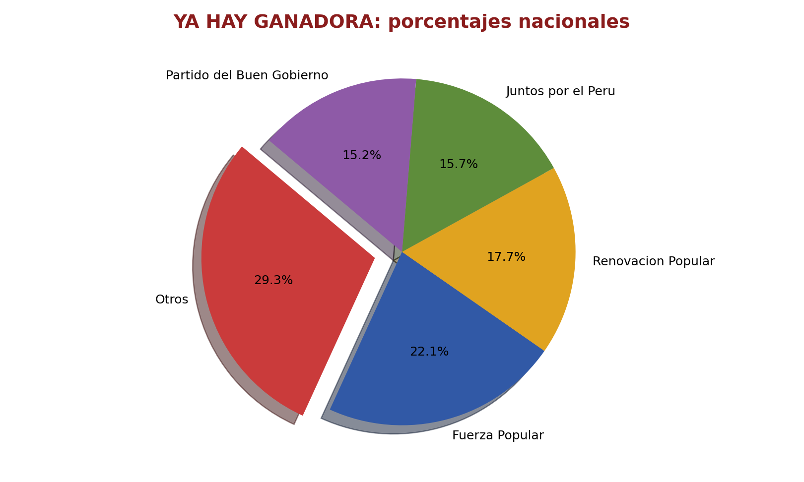
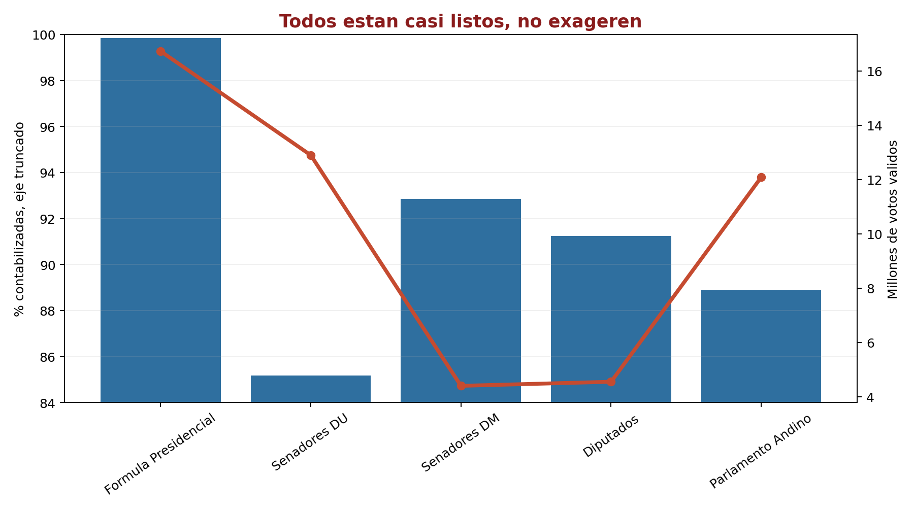
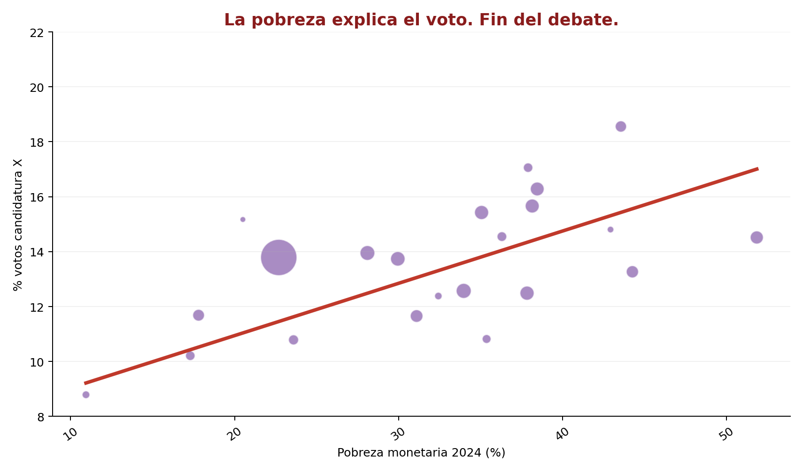
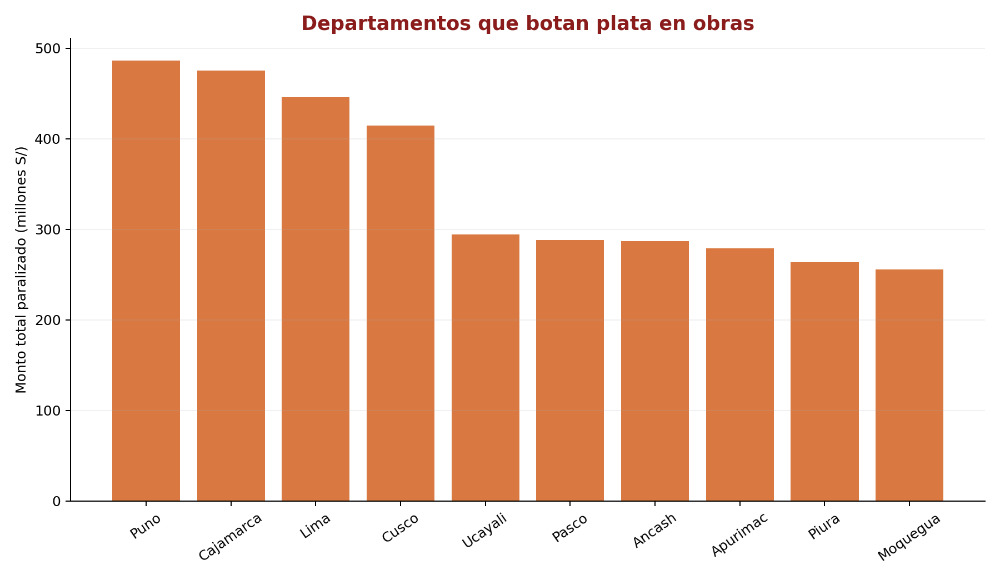

Semanas 1–7 · UPC 2026-01 · Versión con modelado · 20 puntos
Una redacción recibe una tabla sintética de resultados ONPE y publica un pie chart titulado "YA HAY GANADORA: porcentajes nacionales", borrando Otros, mezclando denominadores y declarando ganadora antes de explicar qué se está dividiendo. El gráfico corregido a la derecha usa barra horizontal agrupada con dos denominadores explícitos.

Un gráfico de doble eje compara 5 tipos de elección en la misma pantalla. El eje izquierdo (% contabilizadas, truncado a 84–100%) y el eje derecho (millones de votos válidos) crean la ilusión de correlación. El error de fondo: elecciones nacionales (92,766 actas) y elecciones de circunscripción (26,368 actas) aparecen con la misma barra.

| Elección | Ámbito | Total actas | Pendientes | % contabilizadas |
|---|---|---|---|---|
| Fórmula Presidencial | Nacional | 92,766 | 0 | 99.84% |
| Senadores DU | Nacional | 92,766 | 17 | 85.18% |
| Senadores DM | Lima Metro ⚠ | 26,368 | 1 | 92.86% |
| Diputados | Lima Metro ⚠ | 26,368 | 0 | 91.23% |
| Parlamento Andino | Nacional | 92,766 | 11 | 88.91% |
total_actas (92,766 vs 26,368) junto con ambito_mostrado ("Nacional" vs "Lima Metropolitana"). En el dataset, Senadores DM y Diputados tienen tipo_ambito = "circunscripcion" vs "nacional" — muestran que el universo es distinto y que la comparación directa de porcentajes es espuria.
riesgo_cambio_visual = (actas_jee + actas_pendientes) / total_actas × 100total_actas de esa elección, no un total cruzado de todas las elecciones.
Un scatter de pobreza vs voto (N=304 distritos) con línea de tendencia declara "La pobreza explica el voto. Fin del debate." El error estadístico es la falacia ecológica; el error ético es estigmatizar identidad política como función lineal de condición material. El gráfico alternativo segmenta por tipo de área y elimina la trendline impuesta.

tipo_area_sintetica (rural/urbano/mixto) que ya muestra que dentro del mismo nivel de pobreza distrital, distritos de distinto tipo de área tienen comportamientos de voto dispersos — lo que es inconsistente con la lectura "la pobreza explica el voto". Se necesitaría encuesta de salida con microdatos individuales (ingreso, etnicidad, educación, voto declarado) para hacer esa afirmación sobre individuos.
log(electores_hábiles) para que Lima no aplaste visualmente al resto pero se mantenga la codificación de peso demográfico.Un ranking de departamentos por monto bruto paralizado (S/ millones) titulado "Departamentos que botan plata en obras" funde dos granularidades distintas, usa monto bruto como proxy de mala gestión, y no declara ningún denominador de control (población, presupuesto de inversión, número total de obras).

nivel_resumen puede ser "departamento-total" o "sector-especifico". Una fila de sector='Total' ya incluye los montos de los sectores específicos.nivel='departamento-total' más filas de nivel='sector-especifico' del mismo departamento, el monto total nacional se infla artificialmente. (2) Fan trap: si una obra individual se une con la tabla resumen (que tiene múltiples filas por departamento), los montos de la obra se multiplican por cada sector del departamento. (3) Comparación de N distintos: un departamento con 2 sectores y otro con 5 sectores tendrán distinto número de filas en el resumen — agregar sin control produce promedios inválidos.
El equipo recibe resultados electorales a nivel mesa-organización y quiere cruzarlos con geografía, ruralidad y servicios. El jefe pide un modelo simple para Tableau; el área de datos pide un modelo normalizado. El caso evalúa capacidad de argumentar el modelo correcto para cada escenario.
fact_mesa. Contiene métricas numéricas aditivas (votos, votos_validos_mesa, electores_habiles_mesa) y claves foráneas a las dimensiones.mesa_id × organizacion_politica × eleccion_id. Esto significa que para una misma mesa y elección, habrá tantas filas como organizaciones participaron — el total de votos de la mesa se distribuye en esas filas. El campo votos_validos_mesa es constante para toda combinación del mismo mesa_id × eleccion_id (verificado: 0 inconsistencias en el dataset).dim_territorio no respeta distrito_id como clave única — por ejemplo, si tiene dos filas para el mismo distrito (años distintos de medición de servicios, distintas versiones de límites distritales) — el JOIN con fact_mesa duplicará las filas del hecho. Cada voto de una mesa del distrito D00001 aparecerá dos veces en el resultado del JOIN, inflando el total electoral. Con 1,358 mesas y N organizaciones por mesa × 2 filas de dim = el total de votos se duplica exactamente. En el dataset actual, dim_territorio sí es clave única por distrito_id — pero el riesgo existe si se incorporan series históricas sin llave compuesta.
COUNT(DISTINCT distrito_id) en dim_territorio_completa debe igualar el de fact_mesa. Dataset actual: 334 = 334 ✓votos_validos_mesa debe ser idéntico para todas las filas del mismo mesa_id × eleccion_idGROUP BY mesa_id, eleccion_id HAVING COUNT(DISTINCT votos_validos_mesa) > 1SUM(votos) ≤ votos_validos_mesa por mesa — los votos por organización no pueden superar los votos válidos de la mesa.dim_servicios debe tener exactamente un registro por distrito_id × anio_medicion antes de denormalizar. Duplicados inflan métricas de servicios en el JOIN.distrito_id × anio_medicion) + dim_eleccion + dim_organizacion.
| Criterio | ★ Estrella | ❄ Copo de Nieve |
|---|---|---|
| Joins en Tableau | 1 join directo | 3–4 joins en cadena |
| Actualización geográfica | Regenerar dim entera | 1 fila en dim_provincia |
| Dim_servicios temporal | Denormalizada (año fijo) | Satélite por distrito × año |
| Performance < 10K filas | Igual | Igual |
| Performance > 100M filas | Mejor | Más lento |
| Claridad para analista | Alta (todo en una tabla) | Media (jerarquía de joins) |
| Integridad referencial | Solo a nivel dim plana | Auditable por nivel |
| Escenario recomendado | Sala de prensa / 24h | Repositorio / actualizaciones regulares |